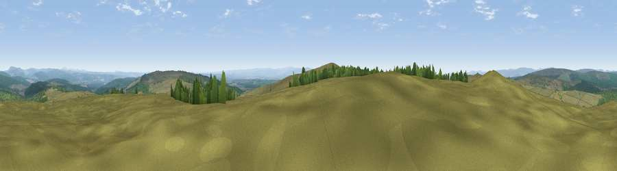

Viewpoint c11636_7206
#6735 in England · top 13% of its area beats it · —Where it is
The exact computed spot (NY 60362 81838). Click the marker for map links.
The view, rendered

A 360° render of this exact spot computed from the terrain model, tree cover and land cover — summer colours, afternoon light, calibrated against photographs of famous viewpoints. Real trees, hedges and buildings will differ in detail.
The panorama
Grey silhouette: terrain skyline in each direction (720 bearings, Earth curvature and refraction included). Dashed green: skyline with trees (+15 m) and buildings (+8 m) as obstacles. Blue strip: how far the ground is visible on each bearing.
Where the view opens
Wedge length = distance to the farthest visible ground on that bearing (vegetation-aware). Rings at 10, 25 and 50 km.
What fills the view
67% grassland · 32% woodland
Angular shares of the visible panorama (visual magnitude), not map area. Landscape diversity 0.29 (0–1 Shannon).
Key numbers
More beautiful places nearby
The staircase of upgrades: each row has a higher view potential than everything closer. Driving times are estimates from straight-line distance, calibrated against real road routing — check an actual route before setting out.
| Place | Direction | Drive | Score |
|---|---|---|---|
| Sighty Crag | SSW · 1 km | ~3 min | 74.7 |
| Viewpoint c11644_7156 | W · 3 km | ~6 min | 80.8 |
| Viewpoint c11995_7247 | N · 18 km | ~31 min | 82.1 |
| Viewpoint near Hepple | ENE · 44 km | ~65 min | 82.4 |
| Viewpoint c12273_7856 | NE · 45 km | ~66 min | 83.7 |
| Viewpoint c12396_7887 | NE · 51 km | ~72 min | 85.7 |
| Viewpoint near Kirknewton | NE · 58 km | ~80 min | 86.1 |
| Ullock Pike | SSW · 64 km | ~87 min | 89.4 |
55.12931, -2.62317 · source: screening · position refined by local search. Computed location — check access rights before visiting.